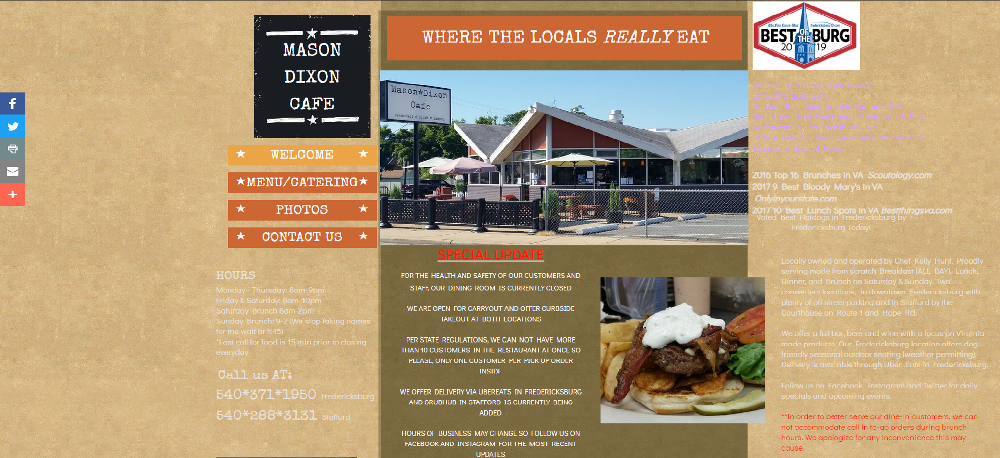
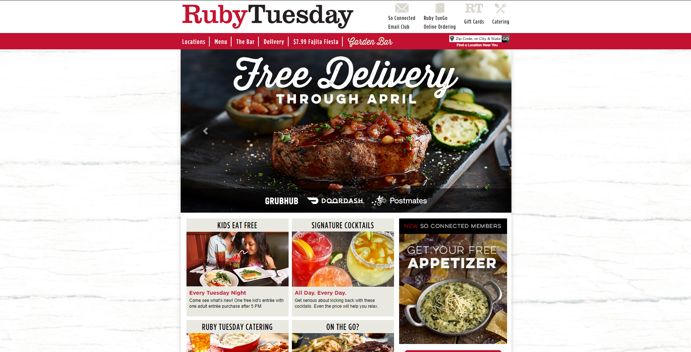
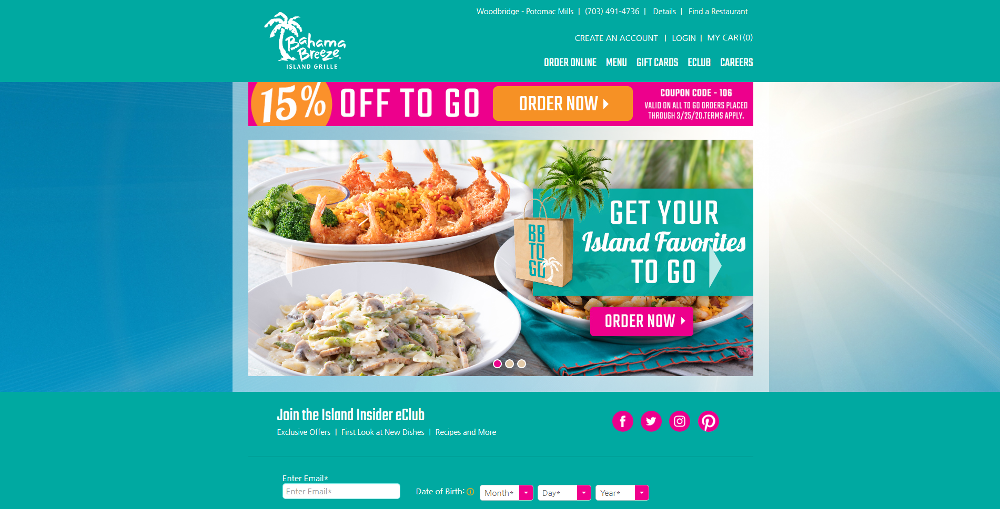

This site is well put together and has changed its layout recently due to the virus outbreak. They've changed their menu link to lead to a pdf file with their new limited menu, but it is understandable with what is going on right now. The home page uses very warm colors that look inviting. The hours, address, and phone number are right in the middle of the homepage making it easy to find them quickly. These types of places are targeted to the middle class while at the same time giving off a thematic vibe of a retro style restaurant. They also have a whole section of the site dedicated to a healthier menu for kids, which is nice. The site is also easy to traverse and is very user-friendly. There are high-quality pictures all over the site, with the pictures of the founders being very high-quality, with a blur applied to the background to emphasize them. The logo is well-placed, and it doesn't pop into your face, which I think is a good thing.

The target audience is clearly seafood and beer enthusiasts. The website may seem daunting at first, but it really is very streamlined. There is a gallery of their different foods right on the homepage and the navigation buttons are easy to find. With a simple scroll down, you can find their location and contact info along with a map that shows the exact location. The page has a very smooth transition when clicking through the different navigation links. Each page has a location navigational link, which takes you back to the contact area. There are no visibile social media links from what I can see. There also isn't an About Us page, only a small bit about them on the home page. All the images, including the ones in the gallery,are high quality. The colors are well-used, but the red may be a bit too bright compared to teh rest of the colors used. You can also do reservations, which would be nice for parties or outings.
I picked this site because I had eaten here with family a few times and wanted to see what their online presence was like. Safe to say, I was pretty dissapointed in what their site looked like. Right off the bat, you are hit with an explosion of text in different colors. The images don't fit in the spaces that they made for them, and the background color simply does go well with the text, making it hard to read. It takes a bit to find the hours and their location due to there being so much on screen at once. When you scroll down to the bottom, there is just a huge empty space that leads to the footer. The menu page is not much better, with the text being very small and again, contrasting poorly with the background. They also have a photo gallery with high quality images, but one of the pictures doesn't load. The food is good, but the site does not give off the right impression.
Ruby Tuesday is a restaurant that everybody knows and their website is appropriately made to reflect that. There are images that scroll by on the home screen, as well as offers on different deals. The header area looks a little bit too crowded, but nothing major. Ther navigation links show locations near you and their hours. Their menus are very pleasing with nice drop-down menus for each category of food. Their signature color is red, and it shows throughout the site. The site is not very simple at first glance, since things that you may want to see like the "About Us" page are delegated to the bottom of the page in very small font. Their hours aren't located right on the main page, meaning you have to go searching for it in the locations section. They also do delivery and catering, which is good.
Bahama Breeze is a carribean style restaurant and it reflects on the website. Colors that are often associated with being out in the sun and the beach like blue, orange, and pink are displayed prominently. The only issue I have is the sun in the background is very bright and it is on every page, which distracts me. They have a nice details tab that shows the location and hours very quickly and nicely. Their menu is good too, with a photo of each item and a link that shows their nutritional info. There is also a gift card navigational link, which is interesting.